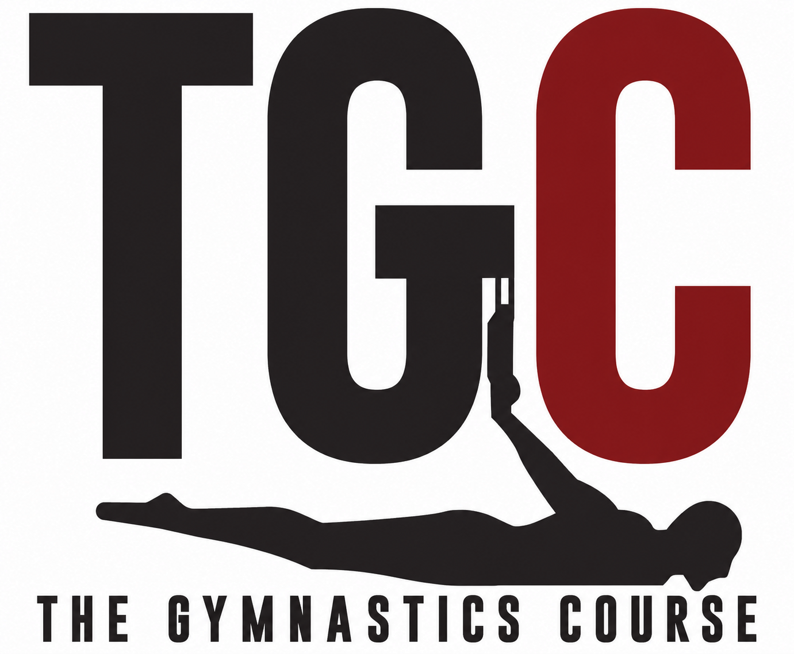
Guide du séminaire

Guide du séminaire
Guide du séminaire
The Gymnastics Course
Manuel du participant
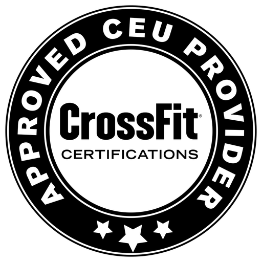
Édition 2026
© 2026 BirdBox Coaching Limited. Tous droits réservés.
Aucune partie de ce manuel ne peut être copiée ou partagée sans autorisation écrite.
BirdBox Coaching Limited · 19 Baggot Street Lower, Dublin 2, D02 X658, Ireland
birdboxcoaching.com
Chapitre 1
The Gymnastics Course est un séminaire de développement du coaching professionnel. Il est dispensé et développé par une équipe de coachs experts qui viennent des quatre coins du globe. Cette équipe a pour objectif de décupler le potentiel des coachs, gérants de salle et athlètes. Nous souhaitons jouer un rôle dans l’amélioration de vos entrainements ainsi que dans le développement de vos objectifs liés au fitness. Notre objectif est d’utiliser les informations et la méthodologie de la gymnastique et du mouvement corporel pour améliorer votre entraînement et votre coaching, comme nous le faisons depuis plus d’une décennie.

Ce manuel est un support à ce que vous découvrirez lors de notre séminaire en présentiel. Il a été conçu pour vous aider, vous guider et faciliter votre apprentissage. Celui-ci vous permettra de suivre de manière précise le déroulé du cours et de devenir un acteur principal dans votre apprentissage. Cependant sachez que ce manuel ne reprend pas tous les éléments abordés lors de ce séminaire.
Si vous souhaitez approfondir votre apprentissage à votre rythme avec The Gymnastics Course, vous pouvez également apprendre de manière interactive grâce à notre cours en ligne. Nous offrons une réduction significative pour toutes personnes ayant participé au séminaire en présentiel, afin de proposer une expérience éducative totale et profonde. Ce document contient des images et des explications qui suivent les différents points importants du séminaire The Gymnastics Course. Des espaces libres sont prévus pour que vous puissiez ajouter vos notes tout au long du cours. L’objectif est de vous permettre de retenir un maximum d’information, de la meilleure façon possible.
Chapitre 2

Chapitre 3
Un Athlète – Un athlète est une personne qui a une forte capacité pour entrer en compétition et gagner contre les autres. Un repère pour un athlète serait d’évoluer au plus haut niveau de son sport ou de se classer dans le top 5 d’une compétition nationale ou internationale.
Analyse des besoins – L’analyse des besoins est un processus formel et systématique d’identification et d’évaluation des besoins d’entrainement à mettre en place pour aider au développement d’un athlète en fonction des exigences de son sport, sa vie ou ses blessures.
Règles – Une règle est basée sur des principes qui sont des normes suggérées pour aider à corriger et développer un athlète de manière sécuritaire. Une règle peut être enfreinte et est dictée par vous-même ou un autre coach.
Loi – Une loi est une règle beaucoup plus stricte qui doit être respectée. Transgresser cette loi n’est pas une option car elle est limitée par la science. Par exemple, la loi de Newton sur la gravité ne peut être modifiée ou contournée.
Virtuosité – En gymnastique, la virtuosité est définie comme étant « un mouvement ordinaire exécuté de manière extraordinaire ». (Greg Glassman 2005)
Maitrise – La maîtrise et l’expertise sont définis comme étant « l’amélioration de la capacité d’un athlète à utiliser efficacement son potentiel moteur » (BirdBox Coaching, 2020)
Tissu actif – Le tissu actif est la capacité d’engager des muscles qui vont favoriser le maintien d’une position et permettre de rester une unité solide.
Hollow – C’est une position utilisée pour créer de la stabilité, caractérisée par une forte contraction de la ligne médiane avec des tissus actifs des orteils jusqu’au bout des doigts. Souvenez-vous que le Hollow est une ligne droite avec une rétroversion du bassin.
Strict – Un mouvement sans élan. L’athlète ne se repose que sur sa force et le contrôle musculaire pour réaliser le mouvement.
Kip – Un changement agressif de direction avec de la vitesse qui amène un changement de plan ou de position pour réaliser un pattern de mouvement.
Technique – La manière ou méthode d’effectuer un mouvement correctement en recherchant la perfection.
Agrès statique – Un agrès stable et qui ne bouge pas (le sol ou les barres).
Agrès dynamique – Un agrès instable et en mouvement (les anneaux)
Mobilité – Mouvement autour d’une articulation.
Souplesse Active – Contraction des muscles opposés pour étirer ou maintenir une position.
Souplesse Passive – Etirement d’un muscle sans nécessité la contraction des muscles opposés.
ROM (Range Of Motion) – Amplitude articulaire.
EROM (Extended Range of Motion) – Amplitude Articulaire étendue.
Spotting – Assistance donner à un athlète dans le cadre d’une progression ou pour prévenir les blessures.
Tension – Peut-être définit comme un état de raideur. S’oppose au terme « relâchement » et « décontraction ». (Fowler & Crystal 2010)

Chapitre 4
Chez The Gymnastics Course, nous soulignons le fait que le CrossFit est un programme de préparation physique générale. Il est donc important que, lors de notre travail avec un athlète ou client, nous établissions une analyse des besoins. Comprendre les besoins et les exigences d’un athlète, de son sport ou de sa vie est essentiel lors de la création du programme d’entrainement.
La gymnastique est purement et simplement un travail basé sur le poids du corps, tout comme la façon dont nous déplaçons notre corps dans l’espace. Sur ce principe, nous devrions nous concentrer sur la gymnastique avant le conditionnement métabolique car celle-ci est le fondement même de nos mouvements et de notre biomécanique. Si un individu a une mauvaise biomécanique (mouvement humain), il est suggéré que sa capacité à effectuer un travail de conditionnement métabolique serait vaine ou pourrait amener à une blessure.

Chapitre 5
Règle numéro 1 : Le statique avant le dynamique
Règle numéro 2 : Le strict avant le kipping
La force est nécessaire pour avoir une bonne technique, une bonne technique est impérative pour avoir une bonne maitrise de son corps. C’est pour cela que la gymnastique met un accent clair sur la force dans les mouvements au poids du corps. La technique dans l’exécution des mouvements stricts va permettre la maitrise du mouvement, c’est pour cette raison que nous encourageons les mouvements stricts avant d’appliquer de l’élan. L’effort nécessaire au travail de la maitrise des mouvements stricts n’est pas vain, il vous fera gagner en force et réduira considérablement le risque de blessure. Les petits mouvements apportent de grandes récompenses. Ne survolez pas ces mouvements. Vous les apprendrez et les maitriserez !
Pour faire preuve de maitrise dans tous nos mouvements, nous devons avoir une conscience et une maitrise de notre corps des plus vertueuse. Pour acquérir cette conscience et ce contrôle, nous devons exécuter toutes les actions avec la bonne technique. Pour avoir cette bonne technique nous devons avoir la force nécessaire dans toute l’amplitude du mouvement, du début à la fin. Tout manque de force dans l’amplitude articulaire compromettra la position et causera l’application de force dans de mauvaises directions. De plus, sans force aucun mouvement ne peut avoir lieu.
Pour améliorer la qualité de mouvement d’un athlète, nous expliquons un procédé qui aide les coachs à être plus efficient. Les différentes options qui s’offrent au coach pour le développement du mouvement sont les consignes verbales, les contraintes physiques et les interventions de coaching.
« La force est impérative pour avoir une bonne technique et une bonne technique est impérative pour avoir une bonne maitrise et une bonne conscience de son corps. »
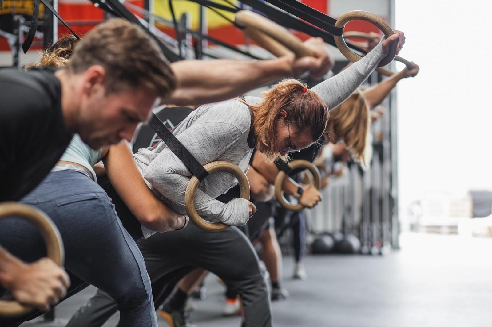
Règle numéro 3 :
Construire une base isométrique
Règle numéro 4 :
Utiliser le travail en excentrique comme outil de développement de la force et de la position.
Une contraction isométrique à lieu lorsque le muscle est sous tension et reste de la même longueur. L’entrainement isométrique est primordial pour la stabilité articulaire et le développement du tissu conjonctif. Une contraction excentrique à lieu lorsque le muscle est sous tension et que celui-ci s’étire. L’entrainement excentrique présente de nombreux avantages, notamment des changements architecturaux au niveau du muscle qui entrainent un développement de la force. Une contraction concentrique à lieu lorsque le muscle est sous tension et que celui-ci se raccourci. À l’entraînement nous effectuons des contractions concentriques quotidiennement. Nous devons donc prendre en considération notre façon de développer de la force chez nos athlètes et les risques associés à ces différents types de contractions. Ces risques seront présentés durant la partie programmation du séminaire.
Chapitre 6
Les consignes verbales sont directement données à l’athlète afin de créer un changement dans la position de l’athlète.
Les contraintes sont des tâches ou des exercices qui ne créeront pas de changement dans la longueur du muscle ni dans sa force, mais l’aideront à travailler plus dur vers l’atteinte de certaines positions.
Les interventions sont utilisées quand les consignes verbales et les contraintes deviennent inefficaces. Elles conduisent à la modification de la longueur ou de la force du tissu musculaire, dans le but d’améliorer le mouvement.
Tout au long du séminaire, nous vous donnerons différents exemples de consignes verbales, contraintes et interventions. Ci-dessous, une illustration de la façon de décider efficacement quand utiliser une consigne verbale, une contrainte ou une intervention.
Chapitre 7
En tant que coach et/ou athlète, il est crucial de comprendre les positions d’un mouvement. Ici, nous vous présentons une série d’images qui mettant en avant les points clés pour développer le mouvement. En comprenant et en pratiquant ces positions clés vous développerez votre technique et améliorerez vos performances tout en réduisant le risque de blessures.
Nous vous encourageons fortement à prendre des notes pour chaque image lorsque que nous les abordons durant le séminaire et à les introduire dans vos routines d’entrainement.


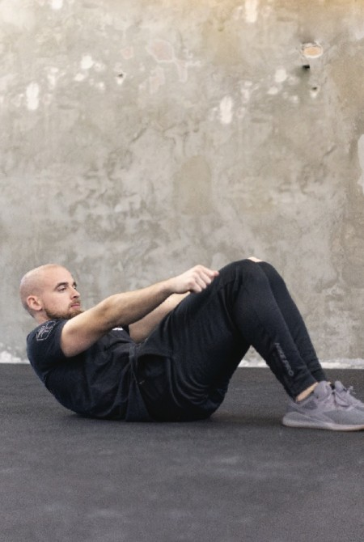

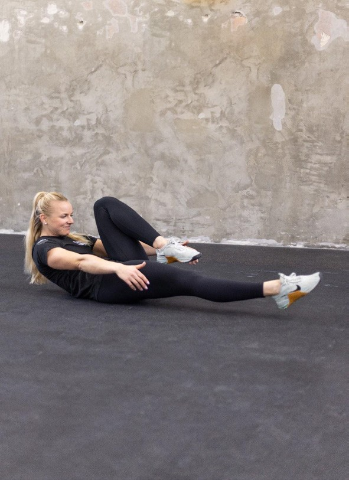


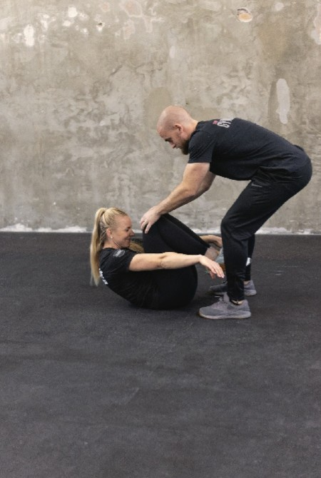


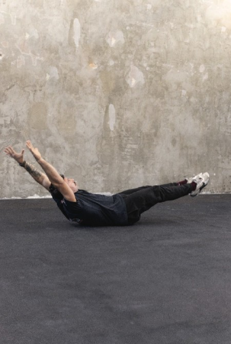

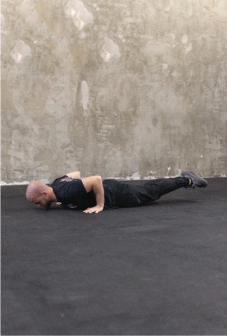


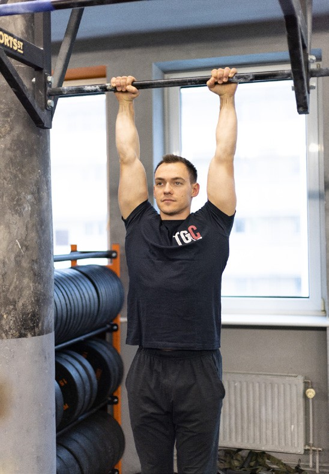
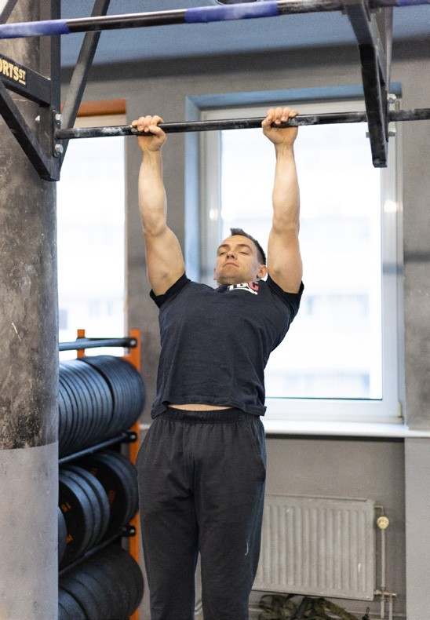


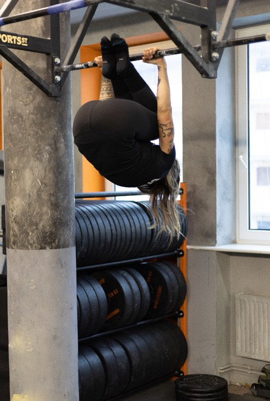


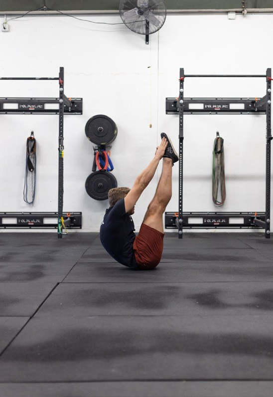


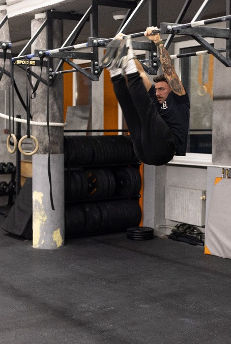


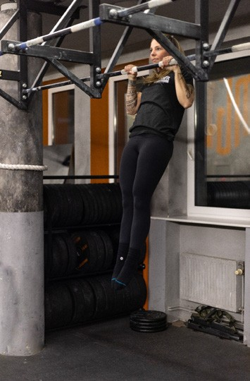


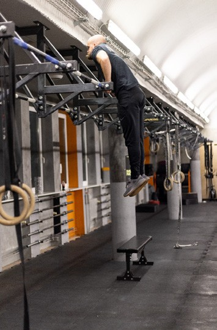


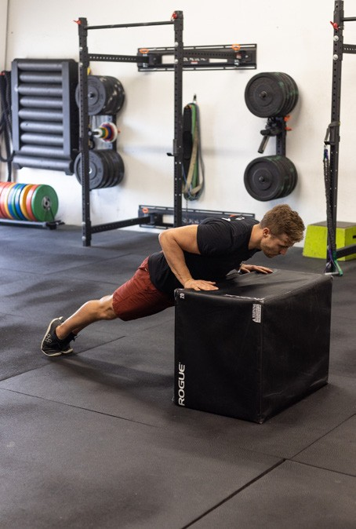
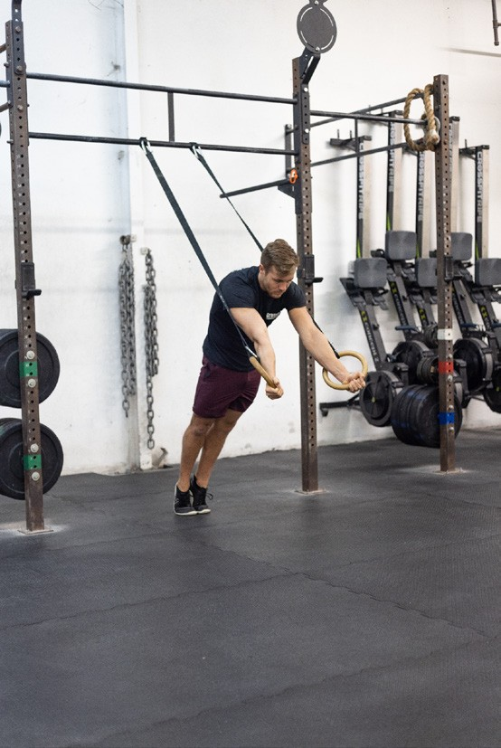


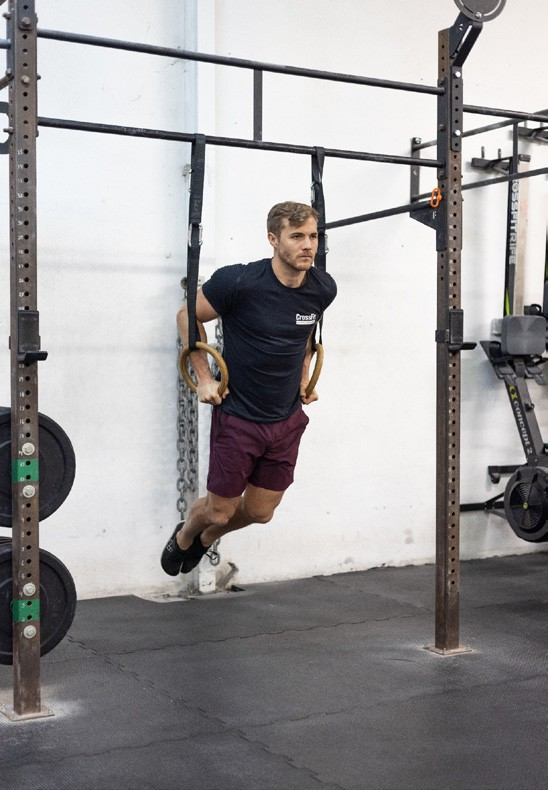


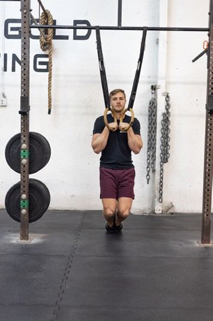


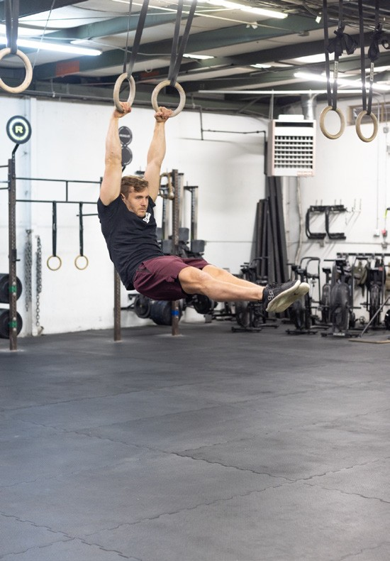


Chapitre 8
Durant la partie programmation nous approfondissons le sujet de la programmation. Sur ce support nous souhaitons mettre en avant certains éléments clés.
La progression linéaire est une méthode d’entraînement qui consiste à augmenter progressivement la difficulté ou le volume d’un exercice au fil du temps afin de stimuler les progrès et l’adaptation. Cette méthode est couramment utilisée en musculation pour aider les athlètes à développer la force et l’endurance nécessaires pour effectuer des mouvements ou des levées plus avancés.
En utilisant la progression linéaire à l’entraînement, les athlètes peuvent augmenter progressivement leur force et leur endurance d’une manière sûre et efficace. Il est important de noter que la progression linéaire doit être utilisée en accord avec une forme et une technique appropriée afin d’éviter les blessures et d’assurer des résultats optimaux. Nous aimons utiliser cette méthode de progression linéaire dans nos programmes de gymnastique.
Beaucoup de personnes utilisent des pourcentages en haltérophilie, mais peu de gens les utilisent en gymnastique. En gymnastique, l’intensité est le % du 1 RM ou le TST (temps sous tension). Le volume total est le nombre total de répétitions ou le temps total sous tension.
Vous trouverez ci-dessous deux exemples de progression linéaire pour le développement des tractions strictes. Comme vous pouvez le constater, nous chargeons toujours la première série de la séance afin de créer une surcharge progressive. Nous aimons commencer cette progression avec 40 %. L’exemple ci-dessous est basé sur une série maximale de 10 tractions vertueuses strictes.
Exemple de progression linéaire avec % de 1RM :
| Semaine | Séance 1 | Séance 2 | Séance 3 |
|---|---|---|---|
| 1. | 4-4-4 | 5-4-4 | 5-5-4 |
| 2. | 5-5-5 | 6-5-5 | 6-6-5 |
| 3. | 6-6-6 | 7-6-6 | 7-7-6 |
| 4. | 7-7-7 | 8-7-7 | 8-8-7 |
| 5. | 8-8-8 | 9-8-8 | 9-9-8 |
| 6. | Retest | ||
*Adaptez ce cycle avec le nombre de votre série maximale.
Si vous n’êtes pas en mesure de faire un pull-up strict, nous devons développer votre force en travaillant le temps sous tension. Dans ce cas, commencez par l’exemple de progression ci-dessous. Le premier chiffre correspond à la position statique du menton au-dessus de la barre et le second à l’excentrique. Si vous n’êtes pas en mesure de contrôler et de maintenir ces positions avec tout le poids de votre corps, réduisez l’effort en utilisant un point d’appui sur les orteils.
Exemple de progression linéaire avec TST :
| Semaine | Séance 1 | Séance 2 | Séance 3 |
|---|---|---|---|
| 1. | 3/3 - 3/3 - 3/3 | 4/4 - 3/3 - 3/3 | 4/4 - 4/4 - 3/3 |
| 2. | 4/4 - 4/4 - 4/4 | 5/5 - 4/4 - 4/4 | 5/5 - 5/5 - 4/4 |
| 3. | 5/5 - 5/5 - 5/5 | 6/6 - 5/5 - 5/5 | 6/6 - 6/6 - 5/5 |
| Retest | Testez à nouveau vos tractions strictes. Si vous êtes capable d’en faire une, continuez avec la session 1, semaine 4. Si vous n’y arrivez pas, continuez à augmenter le TST de vos séries. Si vous avez utilisé un point d’appui sur les orteils au cours des trois premières semaines, recommencez à la semaine 1 et utilisez le poids total de votre corps. | ||
| 4. | 1-1-1 | 2-1-1 | 2-2-1 |
| 5. | 2-2-2 | 3-2-2 | 3-3-2 |
| 6. | 3-3-3 | 4-3-3 | 4-4-3 |
*Si vous avez réussi à terminer la progression complète, vous pouvez maintenant commencer avec l’exemple du %.
Vous pouvez appliquer cette progression à tous les mouvements de gymnastique. Il s’agit d’une approche très simple et facile à appliquer dans votre programmation. C’est peut-être même la meilleure approche pour la plupart de vos membres.
Si vous souhaitez jouer avec le volume, l’intensité et la fréquence dans le cadre d’une programmation individuelle, vous trouverez ci-dessous un autre exemple de progression linéaire avec une plus grande variabilité du volume, de l’intensité et de la fréquence.
*L’exemple ci-dessous est basé sur une série maximale de 10 tractions vertueuses strictes.
| Semaine | Intensité | Fréquence | Volume |
|---|---|---|---|
| 1. | 3 séries à 40 % 4-4-4 | 2 séances par semaine | 24 répétitions |
| 2. | 3 séries à 40 % 4-4-4 | 2 séances par semaine | 24 répétitions |
| 3. | 3 séries à 50 % 5-5-5 | 2 séances par semaine | 30 répétitions |
| 4. | 3 séries à 50 % 5-5-5 | 2 séances par semaine | 30 répétitions |
| 5. | 4 séries à 40 % 4-4-4-4 | 2 séances par semaine | 32 répétitions |
| 6. | 4 séries à 40 % 4-4-4-4 | 2 séances par semaine | 32 répétitions |
| 7. | 3 séries à 40 % 4-4-4 | 3 séances par semaine | 36 répétitions |
| 8. | 3 séries à 40 % 4-4-4 | 3 séances par semaine | 36 répétitions |
Comme vous pouvez le constater, l’intensité, le volume et la fréquence ne varient que toutes les deux semaines. Après les deux premières semaines, nous avons augmenté l’intensité. Après quatre semaines, nous avons réduit l’intensité mais augmenté le volume. Au cours des semaines sept et huit, nous avons augmenté la fréquence. En jouant avec le volume, l’intensité et la fréquence, vous pouvez voir comment le volume total augmente. Vous pouvez également appliquer ce principe aux contractions isométriques ou à la charge excentrique.
Dans l’exemple, vous pouvez voir que le volume en gymnastique est faible. En haltérophilie, vous n’obtiendrez pas de gain sur votre charge avec ce volume. En gymnastique, nous obtenons une évolution dans les adaptations par le temps sous tension et le travail en tempo, et non par le volume. Occasionnellement, nous pouvons utiliser un volume plus élevé, mais c’est le temps sous tension et le tempo que nous devons vraiment utiliser.
Reprenons l’exemple de progression linéaire avec % de 1RM, en faisant notre série de 4-4-4 tractions strictes, nous nous suspendons en hollow pendant 5 secondes, nous effectuons un travail concentrique de 3 secondes, nous maintenons notre menton au-dessus de la barre pendant 3 secondes et nous effectuons un travail excentrique de 5 secondes vers le bas pour les 4 répétitions. Nous voulons développer la technique et la virtuosité, et non le volume et l’intensité.